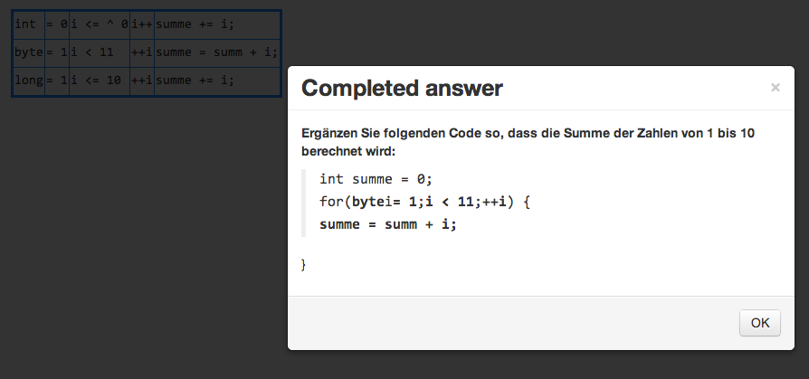

Short Overview of the Onlineresponse system by Axel Böttcher
Note: all examples are taken from "Der große ZEIT Mathe-Test", Die Zeit 32/2013 S. 32.
These are screenshots from the running application.
Single and Multiple Choice questions
Question as seen on student's device:
Result as seen by teacher
Heatmaps (Point-and-click questions)
Question as seen on student's device:
Result as seen by teacher
Cloze questions (freitext)
Question as seen on student's device:
Result as seen by teacher
Single result in original context (by clicking on result)
